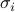
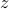
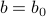
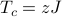

Mean Field Solution of Ising Model
Now that we understand the variational principle and the non-interacting Ising Model, we're ready to accomplish our next task. We want to understand the general d-dimensional Ising Model with spin-spin interactions by applying the non-interacting Ising Model as a variational ansatz. In other words, we want to use what we just derived for independent, uncorrelated spins as a trial Hamiltonian in a variational treatment of the full Ising model.
As we'll see, we'll be able to interpret our results as a mean-field model, where each of the spins on the Ising lattice experiences the ‘‘average’’ field produced by all its neighbors. We'll discuss whether or not this brutal averaging is justified, and talk about under what circumstances it's more or less reasonable.
As an added bonus, we'll also encounter our first example of a continuous phase transition. In this dramatic process, the spins go from a disordered random phase with no overall magnetization to an distinct low-temperature ordered ferromagnetic phase where a macroscopic fraction of the spins are all aligned in the same direction. It's really quite surprising that Nature exhibits these sorts of marvelous ‘‘collective conspiracies’’, and it's even more surprising that they occur at a single well-defined temperature called the critical temperature  .
.
Finally, we'll talk about how to figure out the value of the critical temperature by drawing a picture and seeing where two graphs intersect. Sometimes you can discover the cleverest things in the silliest ways…
Okay let's get started.
We solved the 1D Ising model by using transfer matrices…but why can't you solve the general n-dimensional Ising model with transfer matrices?
Variational Solution to Ising Model
The game plan for today is to solve the general Ising model

by using a trial Hamiltonian of the form
Here our full Ising model has an energetic coupling between neighboring spins  and  and the external field
and the external field  acting on all the spins. In our variational ansatz
acting on all the spins. In our variational ansatz  , we pretend that the spins are actually decoupled from each other (that is, there's no
, we pretend that the spins are actually decoupled from each other (that is, there's no  terms), and that each of the spins instead experiences an ‘‘effective external field’’
terms), and that each of the spins instead experiences an ‘‘effective external field’’  . (We'll discuss how to interpret later on.)
. (We'll discuss how to interpret later on.)
Our objective here is to find the values of that make our trial Hamiltonian the ‘‘best’’ possible approximation to the actual Hamiltonian. As we learned, the variational principle says us that the ‘‘best’’ value of is the one that minimizes the variational free energy

(Remember that the subscript  means that we're finding thermal averages using the weights from the trial ensemble. This statement is much fancier than it sounds; it just means that whenever we see something such as , we just replace it whatever the solution to the trial Hamiltonian was. For instance, in this example, we're using the non-interacting Ising model as a trial Hamiltonian, so we plug in the formulas at the bottom of the last page.)
means that we're finding thermal averages using the weights from the trial ensemble. This statement is much fancier than it sounds; it just means that whenever we see something such as , we just replace it whatever the solution to the trial Hamiltonian was. For instance, in this example, we're using the non-interacting Ising model as a trial Hamiltonian, so we plug in the formulas at the bottom of the last page.)
Let's begin.
Finding the variational free energy
We have no recourse but to plug everything into the formula for  . We find that
. We find that
or combining terms,

And since expectations values are linear, we can pull the expectation values inside to go around the sigmas. (If you want to convince yourself of this, you can try writing out the difinition of  .)
.)
Before moving on, we can make one more simplification: since we picked a non-interacting trial Hamiltonian, the spins are uncorrelated, so  just factors into . (We can't always do this; we just happened to pick a non-interacting trial Hamiltonian today.)
just factors into . (We can't always do this; we just happened to pick a non-interacting trial Hamiltonian today.)

(I changed the labels of the indices in preparation for the next step where we differentiate w.r.t. .) At this point, we can expand out our expressions for  and
and  , but a lot of them will cancel out later on, so for now, we'll just leave this expression as it is. Prof. Kivelson calls this ‘‘being clever.’’ I call it ‘‘hindsight is 20-20.’’
, but a lot of them will cancel out later on, so for now, we'll just leave this expression as it is. Prof. Kivelson calls this ‘‘being clever.’’ I call it ‘‘hindsight is 20-20.’’
Finding the derivative
Since we want to minimize with respect to the variational parameters , we just take the derivative and set it equal to zero. Nothing particularly fancy here yet. For now, we'll leave everything in terms of 's because we're ‘‘clever.’’
When we hit with a  :
:
The first term gives us a
 . You can see this is true by plugging in
. You can see this is true by plugging in  and then expanding out the partition function…or if you want some thermodynamic justification, read the Remark at the bottom of this page.
and then expanding out the partition function…or if you want some thermodynamic justification, read the Remark at the bottom of this page.For the second term, the derivative only hits the terms involving spin
 , because the trial Hamiltonian only had terms which looked like
, because the trial Hamiltonian only had terms which looked like  . In the nearest-neighbor-sum, there is one term for each nearest neighbor of site , so we end up with a sum over nearest neighbors
. In the nearest-neighbor-sum, there is one term for each nearest neighbor of site , so we end up with a sum over nearest neighbors  of
of In the last term, we use the product rule. When we hit the coefficient, we get , and when we hit the sigma we get
 .
.
So the derivative of the variational free energy ends up being
where in the second sum, I'm summing over sites that are nearest neighbors (n.n.) of site .
Now time for some magic: the first and the third term cancel out, and then we can factor out a  from what's left! And then when we set the derivative equal to zero, we're left with
from what's left! And then when we set the derivative equal to zero, we're left with
or
Finally, at this point we finally need to plug in our expression for  from the previous page; we end up with a relation between the external field of a spin and the external field of its neighboring spins .
from the previous page; we end up with a relation between the external field of a spin and the external field of its neighboring spins .

Translational invariance
Hooray, we finally have an expression for the 's that satisfy our variational condition  . Unfortunately, all the 's are related to each other in a nasty sort of way involving hyperbolic tanhs, so it all looks kind of messy.
. Unfortunately, all the 's are related to each other in a nasty sort of way involving hyperbolic tanhs, so it all looks kind of messy.
So to proceed further, we make the assumption of translational invariance that all spins really experience the same ‘‘external’’ field; i.e., that equals the same  for all the sites .
for all the sites .
What's the motivation exactly for assuming  ? I…don't quite know honestly. We tried to justify it in section by some argument about it must be the same for all sites in zero-temperature limit, but in my opinion, the argument falls flat because the 's depend on temperature anyways, so why doesn't all hell just break loose when you turn on the thermostat? I think the actual justification is another one of those ‘‘you can't stop me’’ reasons…
? I…don't quite know honestly. We tried to justify it in section by some argument about it must be the same for all sites in zero-temperature limit, but in my opinion, the argument falls flat because the 's depend on temperature anyways, so why doesn't all hell just break loose when you turn on the thermostat? I think the actual justification is another one of those ‘‘you can't stop me’’ reasons…
This begs the question of why we even bothered putting an index on the parameter in the first place, if we were gonna get rid of it at the end of the derivation anyways. I don't know. Go ask the professor.
No matter our reasoning for assuming why , it lets us simplify our result quite a bit: we only need to find one unknown now. The on the LHS is the same as on the RHS. Our sum over the nearest neighbors of site ends up being the same for each of its neighbors, so rather than summing, we just need to multiply by the number of nearest neighbors .
These simplifications give as an equation for in terms of itself as

where is the number of nearest neighbors in the Ising model. You might be thinking that we haven't actually found , since we haven't exactly solved for it…but as we'll see, this expression lets us draw some pretty pictures, so it's good enough for a lot of qualitative purposes. And in any case, mean field theory is only qualitatively correct in low-ish dimensions, so why bother?
The number of nearest neighbors in an Ising model on a  -dimensional hypercube lattice is . For instance, on a chain (
-dimensional hypercube lattice is . For instance, on a chain ( ), you have 2 neighbors to your left and right; on a square grid (
), you have 2 neighbors to your left and right; on a square grid ( ), you have 4 neighbors (left, right, up, down); on a cubic lattice (), you have 6 neighbors (
), you have 4 neighbors (left, right, up, down); on a cubic lattice (), you have 6 neighbors ( ), and so on and so forth.
), and so on and so forth.
It's confusing to write because the little looks like a subscript on  , which is reminiscent of the spin operator in quantum mechanics (and also reminiscent of a certain rapper…)
, which is reminiscent of the spin operator in quantum mechanics (and also reminiscent of a certain rapper…)
On the other hand,  means a zeptojoule or
means a zeptojoule or  Joules! And wouldn't you know, the thermal energy
Joules! And wouldn't you know, the thermal energy  is typically on the order of zeptojoules; at room temperature
is typically on the order of zeptojoules; at room temperature  , it's roughly 4 zJ….I swear there's a conspiracy going on here.
, it's roughly 4 zJ….I swear there's a conspiracy going on here.
Phase diagrams
Ah man, it's getting late, I'm gonna have to go sleep. I'll finish this up tomorrow! The main points of this section are:
You can solve for
self-consistently by plotting the LHS and RHS and looking for where the graphs cross each other.Sometimes, you'll see this self-consistency relation written in terms of
 rather than in terms of .
rather than in terms of .If you solve for
at different temperatures, you'll find that at high temperatures, there's only the  solution, but that after you cross a critical temperature , there's some solutions as well! This phase with a nonzero net magnetization is known as the ferromagnetic phase.
solution, but that after you cross a critical temperature , there's some solutions as well! This phase with a nonzero net magnetization is known as the ferromagnetic phase.To solve for the critical temperature, we realize that the condition for having a nonzero graph-crossing is that the slope of the tanh at has to be lesser greater than 1 so that the LHS can ‘‘catch up’’ to the graph at some later . If we do this for this mean field Ising theory, we find that it predicts a critical temperature .
And then I want to make a few more comments about how to interpret the mean field experienced by each spin, and when the mean field is accurate or not. Perhaps if time permits, I'll also discuss the spontaneous symmetry breaking that occurs in the ferromagnetic phase…hopefully I get around to this someday…
Why does taking a derivative of the free energy w.r.t. the external field give you the magnetization ?
Well, you can see this directly by plugging in  and then expanding out the partition function. It's a pretty fun exercise to work this out yourself…remember that
and then expanding out the partition function. It's a pretty fun exercise to work this out yourself…remember that  …
…
If you're feeling more thermodyanmically inclined, you can also convince yourself that  via the following thermodynamic argument. (Now I'm calling the external field
via the following thermodynamic argument. (Now I'm calling the external field  and the magnetization
and the magnetization  in the true thermodynamic spirit!) Ah yes, thermodynamics…your old friend…I'll gloss over a lot of the details because, because this is a statistical mechanics course, not a thermodynamics course.
in the true thermodynamic spirit!) Ah yes, thermodynamics…your old friend…I'll gloss over a lot of the details because, because this is a statistical mechanics course, not a thermodynamics course.
Okay here we go. When we include the external magnetic field into a thermodynamic treatment, our internal energy function  gains an extra parameter . The external field gives us another handle to perform work on the system; when we twiddle it by an amount , the energy of the system changes by an amount , where we recognize the magnetization as the conjugate variable to the external field . (Think back to E'n'M why magnetic dipole times magnetic field gives you an energy…or maybe think to a quantum mechanical spin…)
gains an extra parameter . The external field gives us another handle to perform work on the system; when we twiddle it by an amount , the energy of the system changes by an amount , where we recognize the magnetization as the conjugate variable to the external field . (Think back to E'n'M why magnetic dipole times magnetic field gives you an energy…or maybe think to a quantum mechanical spin…)
Anyways, once we include a magnetic field, we can either change the internal energy by adding some heat  or by performing some magnetic work
or by performing some magnetic work  , which means that the total differential of the internal energy is
, which means that the total differential of the internal energy is

However, since we're considering the Ising model in a canonical ensemble at a fixed temperature  , it doesn't make much sense to talk about derivatives of the (internal) energy
, it doesn't make much sense to talk about derivatives of the (internal) energy  , because is a natural function of the entropy
, because is a natural function of the entropy  rather than the temperature . So even though we can find the magnetization in principle as a derivative of the internal energy as
rather than the temperature . So even though we can find the magnetization in principle as a derivative of the internal energy as  , it's pretty physically useless to do so, because we're holding entropy constant in the derivative, rather than the temperature.
, it's pretty physically useless to do so, because we're holding entropy constant in the derivative, rather than the temperature.
To account for this issue, we perform a Legendre transformation to the free energy
which then becomes a natural function of the temperature as  ! (I don't have room to actually prove why this is the case in this little remark box…I'm already going way over my quota today in this little aside.) The differential of free energy can then be expressed as
! (I don't have room to actually prove why this is the case in this little remark box…I'm already going way over my quota today in this little aside.) The differential of free energy can then be expressed as

from which we can read off the magnetization
where the derivative is now taken at a fixed temperature rather than at fixed entropy, meaning that it aligns with our treatment of the Ising Model as a constant-temperature canonical ensemble of statistical mechanics.
Okay, to be fair, I didn't really prove anything in the above, I just kind of pulled the  term out of thin air and then waved my hands around for a sort of ‘‘plausibility’’ argument. But I do think it's a reasonable sort of thing to sa. Hooray, thermodynamics!
term out of thin air and then waved my hands around for a sort of ‘‘plausibility’’ argument. But I do think it's a reasonable sort of thing to sa. Hooray, thermodynamics!